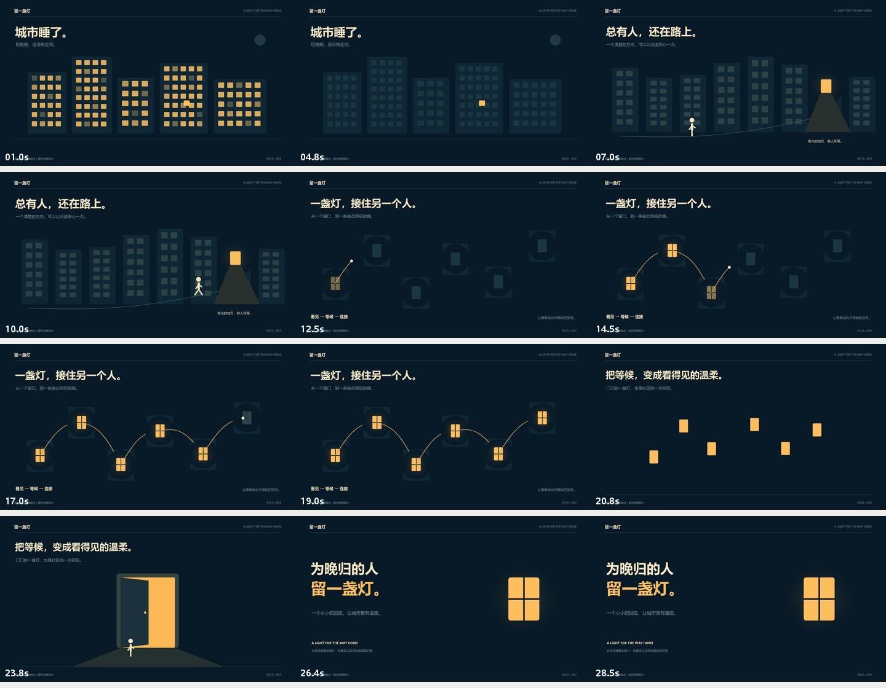

PUBLIC COMMUNICATION / 图形叙事概念
为晚归的人，
留一盏灯。
以一盏灯为贯穿符号，把城市、个体与社区串成 30 秒图形叙事。关注点是一个可被感知的小小回应。
01 / CREATIVE QUESTION
如何把“社区关怀”从抽象主张变成能被记住的画面？
面向普通城市生活者的公共沟通概念。故事中的人物、城市与社区均为图形化虚构场景，不模拟真实新闻或公益成效。
DESIGN RESPONSE
让同一个窗口反复改变意义：它先是夜色中留下的亮点，再成为归途的方向、彼此连接的节点，最终组成打开的门。
02 / STORYBOARD
每个镜头，都承担一个明确任务。
| 时间 | 画面与动作 | 叙事目的 |
|---|---|---|
| 00–06s | 城市入夜多个建筑窗口依次熄灭，一个暖色窗口始终保留。 | 通过数量变化制造对比，让观众注意到仍亮着的灯。 |
| 06–12s | 有人在路上人物沿曲线道路前进，步态变化和暖光方向共同指向目的地。 | 把抽象“晚归”落到一个可以跟随的个体。 |
| 12–20s | 光连接社区六个窗口被逐个点亮，光点沿路径传递，形成相互照应的网络。 | 让善意从单点变为关系，而不是用字幕直接下结论。 |
| 20–26s | 窗口变为门同样的六个光块移动并重组为门框，门板打开，人物走近入口。 | 对象连续性产生叙事转义：看见、连接、接纳。 |
| 26–30s | 留灯的邀请保留一扇完整暖光窗，将主张与符号一起交给观众。 | 用克制的结尾承接情绪，避免虚构公益数字或宏大口号。 |

03 / MOTION & SOUND
运动与声音，服务于同一件事。
动画由时间函数逐帧计算，位置、尺寸、明暗、路径和状态各自拥有明确的起止时间。缓动采用三次曲线；图形变换保留对象身份，使观众能追踪每一步变化。
配乐由正弦谐波、包络与简洁和弦组合成；关键动作配以短音提示。未使用第三方歌曲、采样音轨或录音。无配音，主要信息可通过画面与中文说明独立理解。
04 / DELIVERY
能播放，也能检查。
交付包括 MP4、封面、画面说明字幕、分镜表、关键帧与可重渲染的 Python 源文件。画面由 Pillow 绘制，音频由 NumPy 合成，再经 FFmpeg 编码。
视频：H.264 / 1920 × 1080 / 24 fps
时长：30.000 秒 / 720 帧
音频：AAC / 48 kHz / 双声道
验证：FFprobe 元数据核验 + 完整解码通过
05 / REVIEW
成片检查与下一步。
- 夜蓝与暖黄色保持稳定，明暗变化服务于情绪递进。
- 人物在道路上真实移动并改变步态；灯光沿路径传递，而非整张静态图片横移。
- 节点重组为门的过程保留原对象，形成可读的图形转换。
- 没有使用受访者、新闻、第三方影像或公益数据；保持概念表达的真实性。
可继续发展为社区公共屏幕与竖版传播版本；在真实使用场景测试标题停留时间、弱视可读性以及无声观看时的信息理解。
06 / SCOPE & ORIGINALITY
项目边界与制作说明。
这是原创图形叙事短片，不是 AIGC 文生视频模型生成的镜头，也不是任何官方公益活动。它展示脚本、符号叙事、节奏与交付能力；不能替代摄影、真人表演或生成视频的一致性实证。
本次交付采用 AI 辅助创意梳理与程序实现；片内城市、人物、灯光图形与合成声音均为《留一盏灯》制作。故事场景为虚构，案例不代表字节跳动或任何机构的官方委托，不包含真实公益成效或上线成绩。